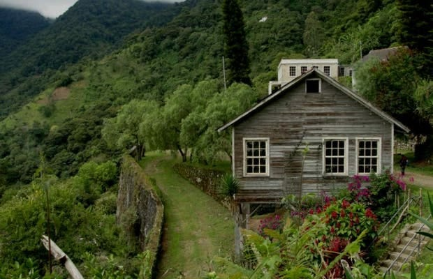

Pagina principal
Animales de Honduras
Parque nacional la tigra
Biosfera del rio Platano
Parque nacional la tigra
El parque nacional Laguna del Tigre es un área protegida ubicada en el municipio de San Andrés en el departamento de Petén, Guatemala y forma parte de las zonas núcleos de la reserva de la biosfera Maya. Está conformado por cuatro lagunetas llamadas: La Lámpara, La Canaleta, La Gloria y Lago Azul. El parque colinda con un biotopo del mismo nombre y ambas áreas en conjunto cubren más de 335 080 hectáreas. Este parque nacional sirve como un nexo entre el este y suroeste de la Biosfera Maya. Contiene paisajes singulares como lagunas y humedales que forman la mayoría de sus hábitats.

Pagina principal